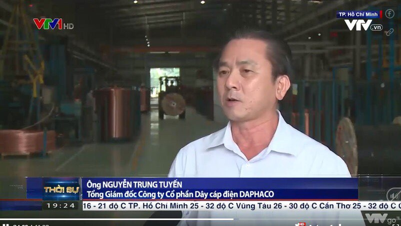
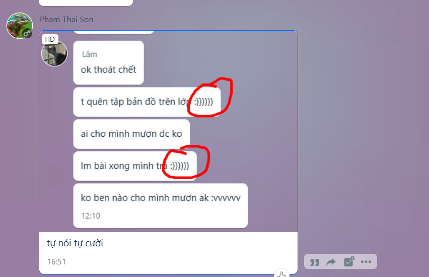
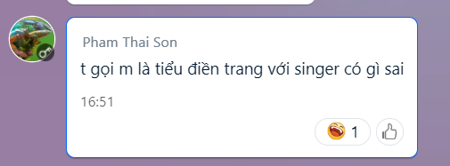
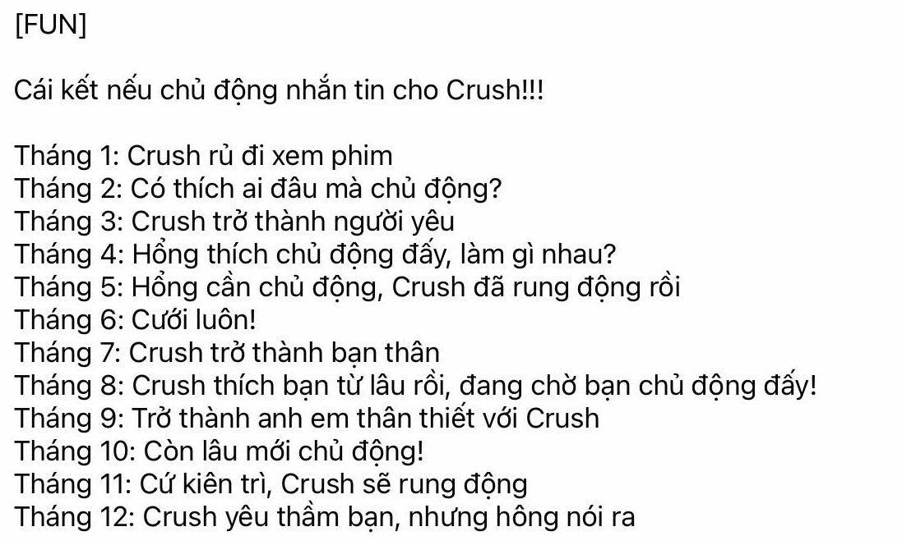
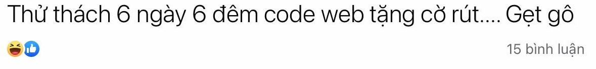

Chiều nay, cả lớp đã nhận được tin bất ngờ từ cặp đôi Sơn - Vu, một người cắt tóc hình vuông, một người đổi mắt kính hình vuông, ẩn ý là gì? :)
**********
Chiều ngày 09/05/2022, sau khi làm bài kiểm tra cuối kì II môn Toán, rất nhiều học sinh đã đổi sắc mặt như kì thi văn, nhiều người đứng trên lan can, nhiều người lê lết trên sàn... (Có tôi nữa :v)
**********
Sau bài kiểm tra đầy khốc liệt, tưởng rằng toán sẽ tha chúng tha nhưng không...

Ảnh tin tức hằng ngày bị tha hóa bởi toán... - Nguồn: Phạm Thái Sơn
**********
Mới đây, chúng tôi được nghe tin anh Nguyễn Thanh Lâm có hành vi hãm hại đôi tai của các bạn xung quanh bằng giọng hát trời phú nghiêng thùng đổ ___ của mình. Đã vậy, anh còn hát sad song, tôi mạnh dạn đoán anh đang hát "Anh ơi ở lại" của Chipu ver nam. Lời thì nôm na là như vầy: "L ơi L ở lại. Ở lại với Lâm đi L ỡ lại. Đừng làm áng mây trôi trên bầu trời, một mình chơi vơi..." <(").
Đã vậy, anh còn giả làm sad boi, gương mặt buồn bã, lấy máy tính cầm tay như niềm vui của mình... pỏo.. =(
**********
Sau khi đi học về không lâu, chúng tôi nhận được tin đang đấu khẩu online lớn nên lập tức đưa phóng viên đi theo dõi trận đấu.
Và hài làm sao, Lâm và Sơn đang đấu với nhau chỉ vì... Lâm cười khi đang chat nhờ vả =)))) ?????????
Theo tôi nghĩ thì việc này không quá nghiêm trọng, tại đó là một phần của cuộc sống họ mà, mình không nên bắt bẻ họ từng chút như vậy :v, *tha thứ và chấp nhận*
**********

Ảnh Sơn bắt bẻ Lâm

Chúng tôi cũng không hiểu ý nghĩa câu nói này lắm
**********
Sau khi lướt facebook một hồi thì mình có tìm được vài tips, các bạn có thể tham khảo nha=)
**********

Ai tháng tốt thì chủ động nhắn tin cờ rút đi kè =))
**********
À mà mình đang có challenge tự mình thực hiện, đó là :) ?
"6 ngày 6 đêm viết web tặng cờ rút, gét gô" =)

*******
Bạn nào biết mình định viết cho ai thì có thể ib để trả lời, đúng mình không thèm rep đâu =))
**********
Còn một điều mình muốn chia sẻ nữa đó là, với bạn nào đang thất tình hoặc lụy tình thì có thể tham khảo bài viết nềy, hi vọng sẽ giúp các bạn nhanh bình phục =)
Link: Cách để quên một người
Và đó là tất cả Tin tức ngày hôm nay, nếu bạn thấy hay, hoặc muốn giúp tạo ra những pài páo hay, chất lượng cùng mình, các bạn có thể liên hệ mình, mình sẽ để thông tin bên dưới.
Muốn làm páo? Liên hệ ngay:
Hiếu deeptry